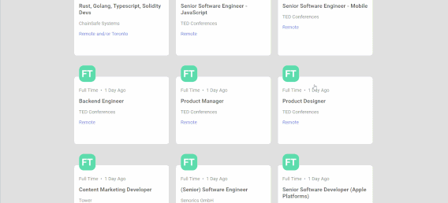
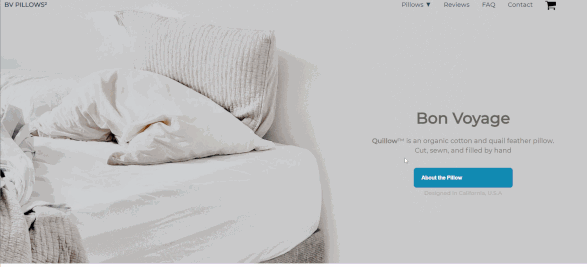
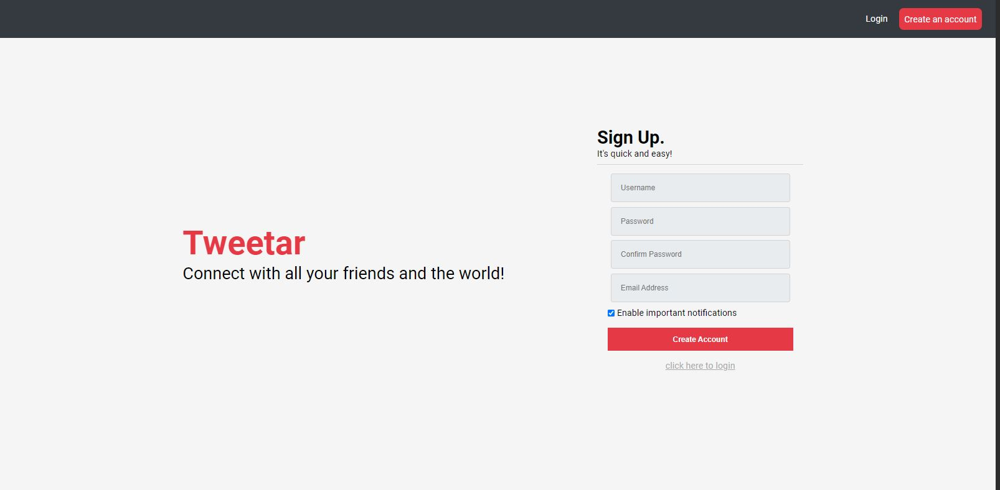
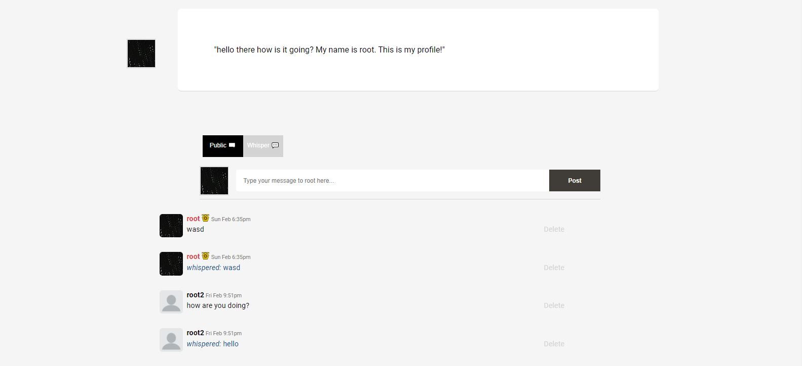
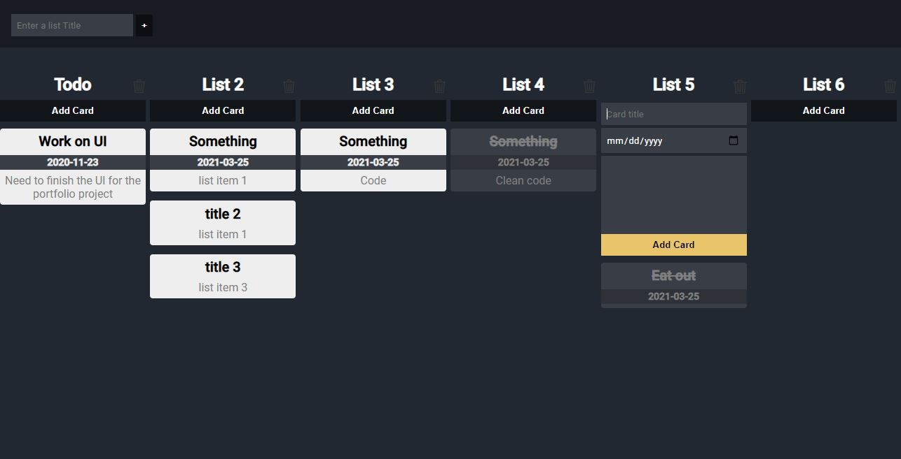
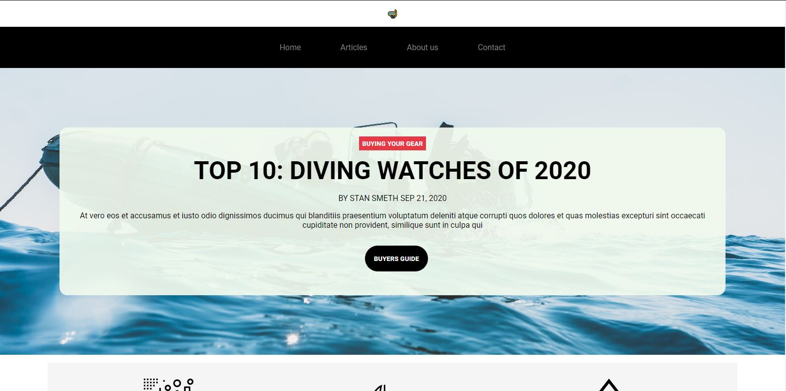

2021 Projects
Job Postings API
Project Description
This project pulls in Job postings and displays them in a nicer looking format. I used React Router to generate dynamic URLs for each ID. I also added a light/dark theme and am using localStorage to hold the user preferences. You can search by title, location, or the job type. The project was made in React Native and I decided to use Fetch instead of importing Axios. I also created icons to show if the job was full time, part time, or contract.
Challenges
One of the neat things I added was a function to the GlobalProvider that took in the date from the API and returned it in a more readable format. For example instead of the date it would say a 2 Weeks ago for better readability. Instead of keeping the function to the global scope of that particular script and having to copy it and add it to another page that was also using it (the job description page) I created a context to store the function for reusability.
Links
BVPillows
Project Description
This was a slash page I made in HTML, CSS, and JS. The goal of this project was to do CSS effects. The page floats up like a feather. I also chose a light could-like color scheme; this is all in theme with a pillow that is as comfortable as a cloud.
Challenges
One of the small challenges I faced was getting the CSS right for the hero Button. Also I got some needed practice with the IntersectionObserver.
Links
Expense Tracker

Project Description
This was a quick project that I worked on using a tutorial from WebDevSimplified with a different theme/styling and added functionality. I decided to add a category setting for users to enter when they enter an expense or deposit.
Challenges
This project required working with LocalStorage and formatting currency which was probably the most challenging for me.
Links
PHP Forum
Project Description
A forum board that has user profiles/friend lists and icons, a special icon for moderators in chat/ PMs + unique username color and badge, along with a discussion board on all user profiles. There is a sign up page as well as a login page. Username availability is checked automatically after a user exits and there is form validation animations. (The site is not currently live because Netlify does not support PHP hosting but can be deployed on a remote server using AMPPS or a similar tool)
Unique Challenges
this was my first PHP and MySQL project. Previously I was working on small
database and PHP projects such as an address book. This was my biggest PHP and mySQL project and
a challenge I faced was some of the logic involved in sorting through the database to find who
is a friend of the user as well as following, followers, and mutual friends. I achieved this by
using Array_intersect($followers, $following) and
Array_diff($followers, $mutual). Then I iterated through each list.
Another issue was making sure that each array was countable so that it did not result in an
error if one list was empty. this was fixed by doing a check to see if it was
countable.
if(countable(count($mutual)) $following : [ ]).
Links
2020 Projects
Todo List
Project Description
This was a todo list. I used a tutorial for portions of the project. I also added dates and custom animations for when a task is completed or removed.
Challenges
I did not face any notable challenges in this project.
Links
Scuba Site
Project Description
This was a website that includes a home page, articles page, about page, and a contact page.
Challenges
The most difficult portion was the Javascript for the counter on the about
page. I used someone elses code for the counter but spent the time to understand it. This
particular counter used and ease out formula where easeOutQuad = (x) =>
x-(2-x) where x is the progress of the frames
const progress = easeOutQuad(frame / totalFrames) . My understanding is
that the closer the frames get to the end the slower they will count. I coded an IntersectionObserver to start the counter when it was in view.